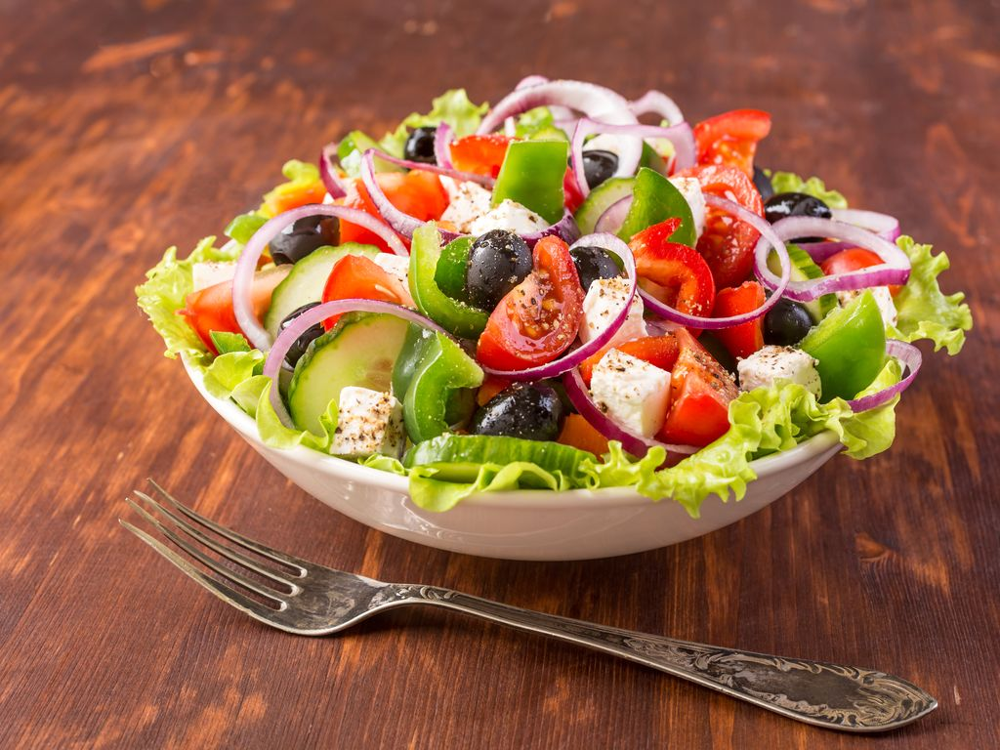

Griekse Salade

Ingredienten
- 4 tomaten (in blokjes gesneden)
- 1 komkommer (in plakjes gesneden)
- 1 rode ui (in dunne ringen gesneden)
- 100 g feta (in blokjes)
- 100 g zwarte olijven
- 1 groene paprika (in reepjes)
- 2 eetlepels olijfolie
- 1 eetlepel rode wijnazijn
- 1 theelepel oregano
- Zout en peper (naar smaak)
Bereidingen
- Was en snijd de tomaten, komkommer, paprika en rode ui.
- Doe de gesneden groenten in een grote kom.
- Voeg de olijven en blokjes feta toe aan de kom.
- Maak een dressing van olijfolie, rode wijnazijn, oregano, zout en peper. Meng goed.
- Giet de dressing over de salade en meng alles voorzichtig door elkaar.
- Serveer de Griekse salade vers, eventueel met wat extra oregano als garnering.